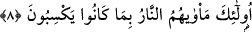
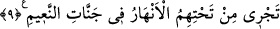

8. İşte onların kazandıkları şeyler sebebiyle varacakları yer ateştir.
“İşte onların”; yani zikredilen kötü sıfatları taşıyanların “kazandıkları şeyler
sebebiyle varacakları yer” yâni meskenleri ve kendisinden ayrılmalarına imkan
olmayan karar kılacakları yer “ateştir.” Cehennem ateşidir, yahut da uzaklık, kovulma
ve pişmanlık ateşidir. Dünya hayatından ve onun nimetlerinden mutmain oldukları şeyler
değildir. Yani onlar sürekli yapıp alışkanlık haline getirdikleri sayılı ve az ameller ile
peşinden yaptıkları türlü isyan ve kötülükleri yüzünden cezalandırıldılar.
9. İman edip iyi işler yapanlara gelince, îmânlarından dolayı Rab’leri onları
altlarından ırmaklar akan nimet cennetlerine iletir.
“Îmân edip”; îmân fiilini yerine getiren veya gafillerin habersiz oldukları âyetlerin
şâhitlik ettiği hususlara inanıp “iyi işler” yani haddi zatında îmâna yaraşan salih
ameller “yapanlara gelince,”
Sâlih ameller, sırf Allah Teâlâ ve O’nun rızası için yapılan amellerdir.
“Rab’leri” âhirette “onları îmânlarından dolayı” yâni îmanları ve îmânın nuru
sebebiyle varacakları yere ve maksadlarına iletir. Orası ise cennettir.
Bir hadiste şöyle buyrulmuştur: “Mü’min kabrinden çıktığı zaman onun için ameli
güzel bir surete sokulur ve ona: “Ben senin amelinim.” der. Artık ameli o mü’min için
bir nur ve cennete götüren bir kılavuz olur. Kâfir kabrinden çıktığı zaman ise ameli
onun için kötü bir surete sokulur ve ona: “Ben senin amelinim.” der. Artık onu
cehenneme sokuncaya kadar alır götürür.”[24]
Âyetteki “hidayet”in, kevnî ve ilâhî hakîkatleri idrake götüren bir yola iletmek olması
da muhtemeldir. Bu, havassın karşılaştığı özel bir hidayettir. Buna da şu hadiste işaret
edilmiştir: “Bildiğiyle amel edene, Allah bilmediği şeylerin ilmini verir.”[25]
Hadiste geçen ilk ilim, öğretim yoluyla elde edilen muamele ilmidir. İkinci ilim ise
veraset Allah’ın bağışlaması yoluyla elde edilen mükaşefe ilmidir. Bu ilkinden daha
yüksek ve daha değerlidir. Çünkü bu ilme göre ilki öze göre kabuk mesâbesindedir.
Allah’dan ihtisas ehlinin tattığı özel feyzi niyâz ederiz.
Onların bostanlara ve bahçelere konulmuş yüksek divanlarının “altlarından
ırmaklar” dört ırmak “akan nimet cennetlerine” yâni nimetlere nâil oldukları ve refah
içerisinde bulundukları cennetlere “iletir.”